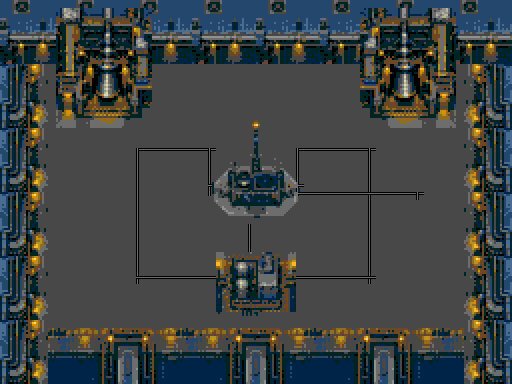
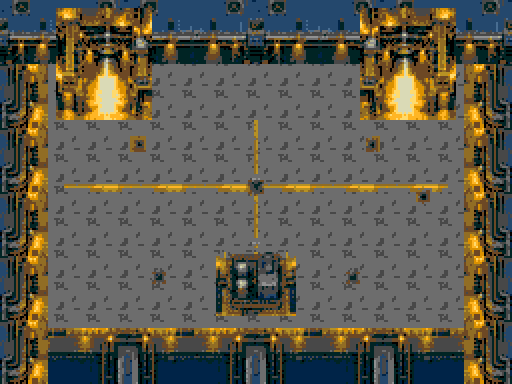

Build isolado integrado, testes em Genesis Plus GX. Cinco geradores, rádio de120segundos e Escorpião. Os vídeos abaixo são execuções reais do emulador.
Para jogar: abrir a ROM de produção após integração central. Setas movem, A atira; soltar A perto da frente de um gerador por0,6segundo liga a máquina. O rádio precisa de proteção física. Dinorah viva auxilia pelo rádio; morta, sequência automática e Padre.
| Fase | Cap inimigos / tiros por pool | FPS carga artificial | CPU pico | Amostra de dificuldade |
|---|---|---|---|---|
| 14 | 4 /4 | 60.0 | 63.48% | 18.08s; HP0; defeat |
| 15 | 3 /4 | 59.0 | 67.72% | 25.0s; HP90; timeout |
| 16 | 4 /4 | 60.0 | 66.16% | 25.0s; HP20; timeout |
Relatório JSON completo. ROM SHA256:e4d476b9fded48425590a9a027ada4dd689f2f3ca61c7a557e52ed4a2f83def2
Cinco geradores ativados com controles, nove colisões testadas, rádio perde e reinicia, rádio vence após contagem inteira, chefe derrotado com tiros reais. A prova do chefe usa saúde30000 no herói como isolamento; não altera a vida do chefe. Não representa vitória humana em dificuldade normal.
| Fase | Cap inimigos / tiros por pool | FPS carga artificial | CPU pico | Amostra de dificuldade |
|---|---|---|---|---|
| 14 | 4 /4 | 50.0 | 37.4% | 25.0s; HP100; timeout |
| 15 | 3 /4 | 49.0 | 42.29% | 25.0s; HP94; timeout |
| 16 | 4 /4 | 50.0 | 40.04% | 17.54s; HP0; defeat |
Relatório JSON completo. ROM SHA256:e4d476b9fded48425590a9a027ada4dd689f2f3ca61c7a557e52ed4a2f83def2
Cinco geradores ativados com controles, nove colisões testadas, rádio perde e reinicia, rádio vence após contagem inteira, chefe derrotado com tiros reais. A prova do chefe usa saúde30000 no herói como isolamento; não altera a vida do chefe. Não representa vitória humana em dificuldade normal.
O teste de carga reinsere4/3/4inimigos simultâneos e quatro tiros de cada lado a cada quadro. FPS mede atualizações lógicas por VBlank. Testes de objetivo retiram a pressão de inimigos por setup de RAM, depois executam os controles sem escrever no objetivo. A amostra de dificuldade usa25segundos de movimentos e disparos automáticos sem alterações durante a tentativa. Ela documenta dano e desempenho; não é uma avaliação humana completa.
O rádio sem cobertura sofre dano e não aguenta dois minutos; interceptar os perseguidores é parte do objetivo. O chefe usa o comportamento já existente: investidas, blindagem e lacaios. A morte do chefe encerra a campanha.

Estaleiro sem ignição

Motores em chamas